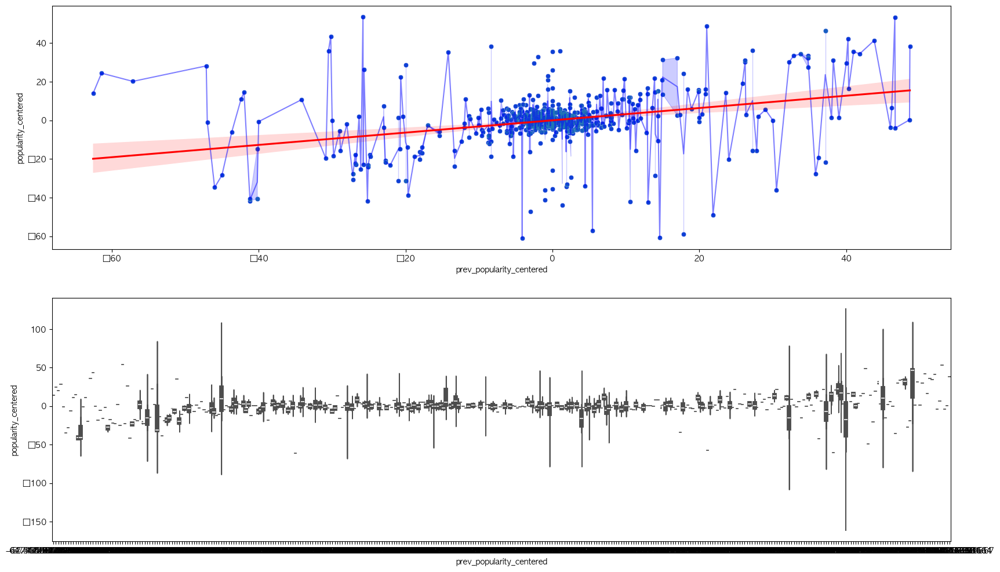

Lucy · Psychology, English Lit, & Tech-Art at CAU
I analyze user behavior to understand why people hesitate, drop off, or fail to act in digital systems — using behavioral data, HCI-informed reasoning, and ML to surface what prediction alone misses.
I investigate the structural and behavioral factors that explain prediction failures in sociotechnical recommendation systems — applying computational methods to expose the gap between algorithmic performance and user-perceived value.
My background in Psychology and English Literature provides the foundation for understanding human behavior and the complex nuances of context. I bridge this with technical expertise in Python, Machine Learning, and Recommender Systems to analyze and build sociotechnical systems that are both mathematically sound and behaviorally intuitive.
I leverage my interdisciplinary training in Psychology and Technology-Art to interrogate algorithmic systems. My research focus lies in Explainable AI (XAI) and Computational Social Science, where I develop methods to expose how structural data biases translate into behavioral friction within digital platforms.
Most recommendation systems optimize for accuracy. My work focuses on the 20% of outcomes that accuracy can't explain — surprise hits, hidden gems, and structural biases baked into data before any model sees it. Fame explains only 10.4% of variance. The other 90% is where the interesting questions live.
Challenges the assumption that audio features drive popularity using residual-based diagnostics on 6,000+ tracks.
Full matrix factorization system from scratch on 25M ratings, exposing the accuracy–diversity paradox.
Real user logs from LUCAUS 2025 reveal a "completion cliff" — engagement collapses the moment the stamp game ends.
Interactive pipeline on the Apple Music catalog showing how platform signals diverge from raw audio features.

Analyzed 6,000+ Spotify tracks to challenge the assumption that audio features drive popularity. Residual-based diagnostics reveal artist reputation vastly outperforms audio signal — and ~20% of tracks behave unexpectedly, exposing systematic genre-level over/under-exposure.
Built a full matrix factorization system from scratch (NumPy only) on 25M ratings. Phase 1 revealed structural bias — 11% of users drive 50% of ratings. Phase 2 exposed the accuracy–diversity paradox: NDCG@10 of 0.9502 while catalog coverage collapsed to 0.07%.
Analyzed real user logs from the Chung-Ang university festival website. Stamp-game participants showed 3.5× higher engagement — but hit a "completion cliff" the moment the game ended. The interface treated completion as a journey endpoint rather than a reward phase.
Explored how audio features and artist momentum interact to shape perceived popularity. Built an interactive pipeline on the Apple Music catalog, surfacing how platform-level signals diverge from raw audio and what that reveals about discovery system design.
Designed the Chung-Ang festival platform: food truck log, map, and stamp game. Post-launch behavioral analysis surfaced key drop-off insights.
YONO philosophy applied to fashion. Taste-based matching via mutual likes. AI recommendations via wardrobe and SNS post analysis.
Travel curation for hidden destinations. Hyper-personalization via taste analysis and conversational UI simplification.
Bilingual vegan cosmetics discovery for foreign residents in Korea. Full style system with accessible cross-cultural UX patterns.
I study systems that fail users without failing metrics. A recommender can hit NDCG@10 of 0.95 while covering only 0.07% of available content — technically excellent, behaviorally broken.
My triple major in Psychology, English Literature, and Technology-Art gives me an unusual lens: I can read both the statistical signal and the human meaning behind it.
Long-term goal: Applied Scientist at a music or media platform — building systems that understand not just what users choose, but why they hesitate and what they never get to discover.
My research examines the divergence between quantitative performance metrics and behavioral outcomes in recommendation systems. Drawing on Psychology, English Literature, and Technology-Art, I apply a mixed-methods approach to surface structural biases that aggregate statistics obscure.
Triple major in Psychology, English Literature, and Technology-Art at Chung-Ang University (2022–2026). Currently preparing for MS programs in HCI and Computational Social Science, with a focus on sociotechnical systems and algorithmic fairness.
Research question: When a system performs well on aggregate metrics but fails specific user populations, what structural and behavioral factors explain the gap?